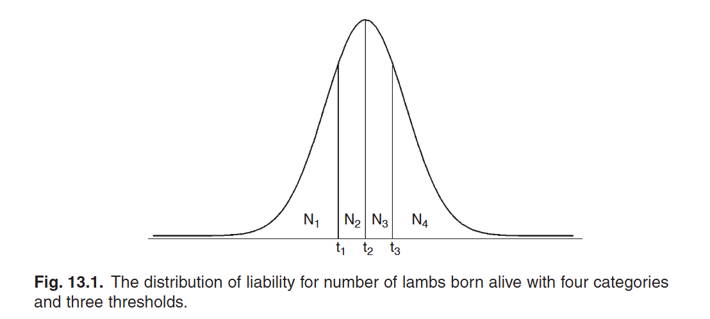
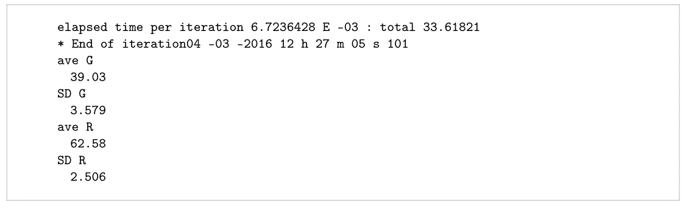
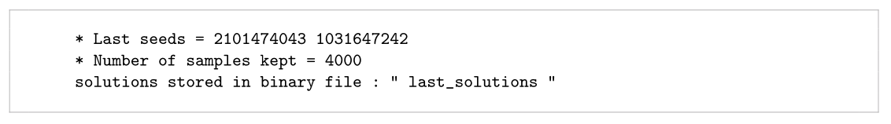
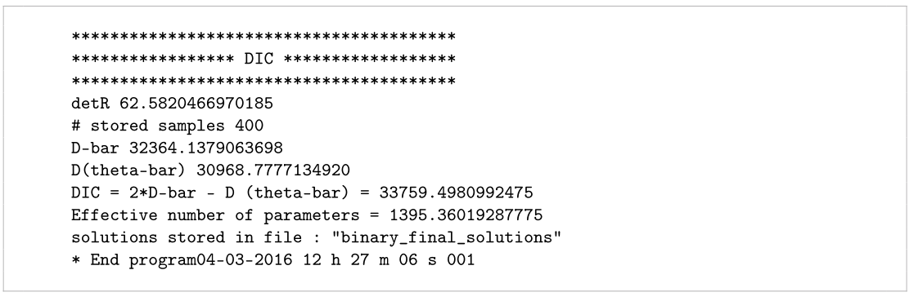
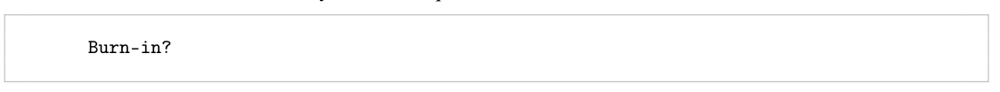
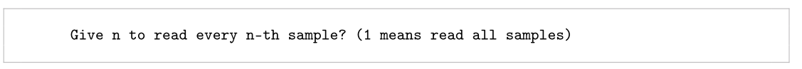
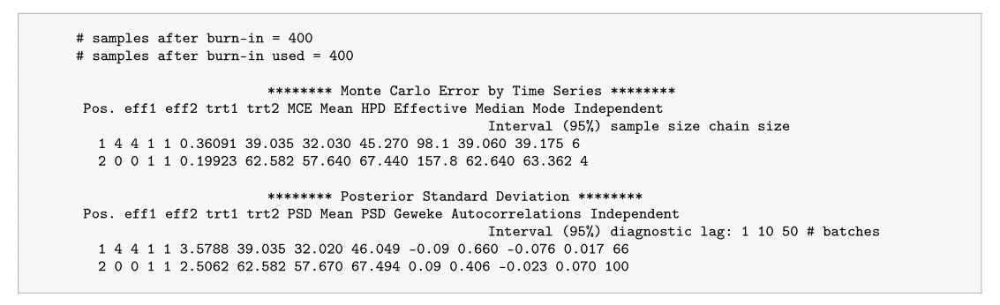
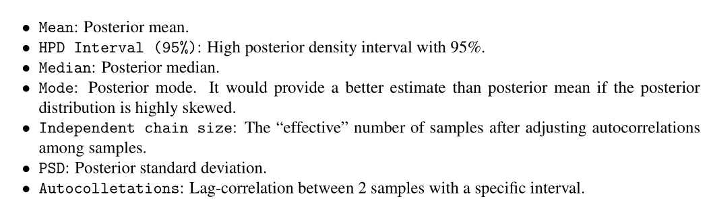

<!DOCTYPE html>


<html lang="zh-CN">


<head>
  <meta name="baidu-site-verification" content="codeva-NSg7ynviLa" />
  <meta charset="utf-8" />
    
  <meta name="viewport" content="width=device-width, initial-scale=1, maximum-scale=1" />
  <title>
    使用blupf90运行阈值模型 |  
  </title>
  <meta name="generator" content="hexo-theme-ayer">
  
  <link rel="shortcut icon" href="/images/mojie.jpg" />
  
  
<link rel="stylesheet" href="/dist/main.css">

  <link rel="stylesheet" href="https://cdn.jsdelivr.net/gh/Shen-Yu/cdn/css/remixicon.min.css">
  
<link rel="stylesheet" href="/css/custom.css">

  
  <script src="https://cdn.jsdelivr.net/npm/pace-js@1.0.2/pace.min.js"></script>
  
  

  

<link rel="alternate" href="/atom.xml" title="null" type="application/atom+xml">
</head>

</html>

<body>
  <div id="app">
    
      
    <main class="content on">
      <section class="outer">
  <article
  id="post-使用blupf90运行阈值模型"
  class="article article-type-post"
  itemscope
  itemprop="blogPost"
  data-scroll-reveal
>
  <div class="article-inner">
    
    <header class="article-header">
       
<h1 class="article-title sea-center" style="border-left:0" itemprop="name">
  使用blupf90运行阈值模型
</h1>
 

    </header>
     
    <div class="article-meta">
      <a href="/posts/33cf95d2/" class="article-date">
  <time datetime="2025-12-29T08:33:52.000Z" itemprop="datePublished">2025-12-29</time>
</a> 
  <div class="article-category">
    <a class="article-category-link" href="/categories/%E6%95%B0%E6%8D%AE%E5%88%86%E6%9E%90/">数据分析</a> / <a class="article-category-link" href="/categories/%E6%95%B0%E6%8D%AE%E5%88%86%E6%9E%90/blupf90/">blupf90</a>
  </div>
  
<div class="word_count">
    <span class="post-time">
        <span class="post-meta-item-icon">
            <i class="ri-quill-pen-line"></i>
            <span class="post-meta-item-text"> 字数统计:</span>
            <span class="post-count">4.1k</span>
        </span>
    </span>

    <span class="post-time">
        &nbsp; | &nbsp;
        <span class="post-meta-item-icon">
            <i class="ri-book-open-line"></i>
            <span class="post-meta-item-text"> 阅读时长≈</span>
            <span class="post-count">14 分钟</span>
        </span>
    </span>
</div>
 
    </div>
      
    <div class="tocbot"></div>


  
    <div class="article-entry" itemprop="articleBody">
       
  <link rel="stylesheet" type="text/css" href="https://cdn.jsdelivr.net/hint.css/2.4.1/hint.min.css"><p>使用blupf90运行阈值模型</p>
<span id="more"></span>
<h1>阈值模型理论</h1>
<p>有些性状属于<strong>有序多分类</strong>的性状，例如产犊难易程度性状，产仔数等。这些性状本身不服从正态分布，但是育种家们通常会将这类性状的表型值归因于某个潜在的无法观测到的服从正态分布的连续性状，称为<strong>liability</strong> （有的人称为易感性，我下面还是称呼为潜在变量）。因此观测到的分类表型可以解释为其潜在变量超过了某个特定阈值后的表型。因此，对于有  个分类的分类变量，这里总共有  个阈值 () 。</p>
<p>阈值模型需要用到正态分布的一些函数，假设我们的性状是产羔数，其有4个分类，此时潜在变量具有3个阈值的分布如下图所示，其中  表示当潜在变量超过  之后的表示产羔数为  的表型。</p>
<p></p>
<p>假设潜在变量  服从  的分布，其正态分布曲线在点  的高度为  为</p>
<p style=""></p><p>这里我们用  表示正态分布的累积分布函数，因此  或   会计算出正态分布曲线左侧截止到第  个分类的面积。假设我们有  个分类，因此当  时，  。</p>
<p>我们定义  为表型观测值为第  个分类的概率，因此 或  可以计算为  ，其中   。或者我们用阈值模型的表示方式，每个阈值用  表示，此时 。</p>
<p>我们对潜在变量的分析模型如下</p>
<p style=""></p><p>其中  是潜在变量的向量，其它和正常的模型一样。</p>
<p>因为   是没有观测到的，因此我们不可能通过构建MME来求解。</p>
<p>假设  ，  Gianola 和 Foulley (1983) 给出了最大化后验分布  的 log 函数的估计值  的式子，其中用到了一阶导和二阶导，公式如下（看不太懂，但是这个方法只有在给定方差组分时进行遗传评估的方法，<strong>没有估计方差组分的内容</strong>）</p>
<p style=""></p><p>其中 ，或  ，其中  或   是父性效应方差或加性效应方差。</p>
<p>很多式子不是很清楚，就先这样吧。</p>
<h1>blupf90 实操</h1>
<h2 id="吉布斯抽样">吉布斯抽样</h2>
<p>在blupf90官方文档的估计方差组分章节中有吉布斯抽样的内容。吉布斯抽样（Gibbs Sampling）与REML方法完全不同。此处我们不探讨该技术的理论背景，细节可参考Sorensen和Gianola（2002）或Misztal（2008）的著作。简而言之，<strong>吉布斯抽样是一种基于当前可用信息，通过随机数生成样本，从中提取后验分布的迭代过程</strong>。在单轮抽样中，吉布斯采样器会执行以下操作：</p>
<ol>
<li><strong>参数求解</strong>：利用当前方差组分（variance components）求解混合模型方程组；</li>
<li><strong>添加噪声</strong>：为每个解的估计值添加一个微小随机数（噪声）；</li>
<li><strong>协方差估计</strong>：基于更新后的解，通过随机数生成协方差估计值。</li>
</ol>
<p>每一轮生成的解和方差组分样本本身不具统计意义，但通过大量重复抽样后，<strong>可通过样本直方图构建方差组分的后验分布</strong>。例如：</p>
<ul>
<li>将样本均值（后验均值）作为方差组分的点估计值；</li>
<li>样本标准差（后验标准差）对应频率学派方法（如REML）中的标准误（standard error）。</li>
</ul>
<p>基础的吉布斯抽样分析包含下面这2步：</p>
<ol>
<li>使用 <strong>THRGIBBSF90</strong> 来生成对方差组分的抽样（<strong>注意不能在同一个文件夹同时跑2个吉布斯抽样</strong>，因此会彼此覆盖结果文件 <code>gibbs_samples</code>）</li>
<li>使用 <strong>POSTGIBBSF90</strong> 来整理抽样结果（确认设置的抽样次数和 burn-in 用于估计方差组分已经足够大了）</li>
</ol>
<p>这两个模块使用的参数卡和 BLUPF90 相同，但是可能会增加一些选项来控制吉布斯抽样过程。</p>
<p>运行 <strong>THRGIBBSF90</strong> 时，除了参数卡名称，你还需要输入3个参数，总的迭代次数，丢弃前多少轮的结果（burn-in），每多少次迭代保存1次结果。</p>
<h2 id="对方差组分的限制">对方差组分的限制</h2>
<p>当某些方差组分不存在时，这里如同 AIREML ，也支持将相应的方差组分设为 0 。但是与 AIREMLF90 不同的是，AIREMLF90 不会再估计不存在的方差组分，但是 THRGIBBSF90 仍然会估计所有的方差组分，然后将相应的不存在的方差组分设为 0 。</p>
<p>有一点与 AIREMLF90 相同，当估计的方差组分超过参数空间时，THRGIBBSF90 会尝试固定相应的需要估计的方差组分（我的理解，是不是说某个遗传参数的估计值超出了参数空间，就仍然使用之前的值）。在这个过程中，可能会出现某个方差组分为 0 的情况，此时这个方差组分之后的估计值会一直为 0 （因为没有信息）。因此如果出现这种某个方差组分碰巧为 0 的情况，你就要考虑可能模型欠佳，或者数据量不足以估计出这些方差组分。</p>
<h2 id="THRGIBBSF90-结果文件">THRGIBBSF90 结果文件</h2>
<h3 id="日志信息">日志信息</h3>
<p>打印在屏幕上的日志信息如下图，首先是每一轮抽样的方差组分结果（基于每多少次迭代保存1次结果这个参数抽取结果），这个程序本身也会计算每一次抽样的育种值结果，在抽样结束后也会打印出一些统计指标如下</p>
<p></p>
<p>其中两个值说明如下，同理另外两个就是残差。</p>
<ul>
<li><code>ave G</code> ： 方差组分的后验均值</li>
<li><code>SD G</code> :   方差组分的后验标准差</li>
<li><code>ave R</code> ： 残差的后验均值</li>
<li><code>SD R</code> :   残差的后验标准差</li>
</ul>
<p>接下来的内容如下，这里是一些不重要的信息，<code>Last seeds</code> 是随机数生成器的 Seeds 信息（不重要），<code> Number of samples kept</code> 是剔除 burn-in 之后的抽样次数，<code>solutions stored in a binary file: &quot;last_solutions&quot;</code> 表示最后一次抽样结果保存为 “last_solutions” （这个文件不重要）</p>
<p></p>
<p>接下来是 DIC 和相应的信息， DIC 是 AIC 一样用于比较2个模型的优劣的指标（越小越好）（下面的公式推导没有看懂）。</p>
<p>其中信息如下</p>
<ul>
<li><code> detR</code> ： 残差协方差矩阵的后验均值的行列式（）。</li>
<li><code># stored samples</code> ： 有多少次抽样结果存储在文件中（等于 (总抽样次数-burn-in次数)/保存抽样结果的频数）</li>
<li><code>D-bar</code> : </li>
<li><code>D(theta-bar)</code> :  </li>
<li><code>DIC = 2*D-bar - D(theta-bar)</code> :  </li>
<li><code> Effective number of parameters</code> :  </li>
<li><code>solutions stored in file: &quot;binary_final_solutions&quot;</code>  :  抽样的后验均值结果存储在 binary_final_solutions 文件中</li>
</ul>
<p></p>
<p>这里我们以  作为参数  的似然换数， 是表型数目， 表示第  次抽样（在 burn-in 之后）的残差方差。</p>
<p>我定义第  次的偏差  为</p>
<p style=""></p><p>这里  为  ， 为某个观测值  的残差（ ）。</p>
<p>通过  burn-in 之后的  次抽样后， （ 的期望值的估计值）定义为</p>
<p style=""></p><p>我们以同样的方式计算  后验均值的估计值。我们使用上面计算   的公式来计算后验偏差  ，只是  替换为了其后验均值   </p>
<p style=""></p><p>这些统计量都是使用 burn-in 之后的抽样结果，之后按照下面的公式计算统计量 DIC</p>
<p style=""></p><p>THRGIBBSF90 会将每一个  值存储在文件 <code>fort.99</code> 中。</p>
<h3 id="生成的文件">生成的文件</h3>
<p>THRGIBBSF90 会生成下面的文件</p>
<ul>
<li><strong>gibbs_samples</strong> ：burn-in后，特定轮次中方差组分（variance components）的抽样样本。<br>
<em>（示例：用于绘制后验分布直方图或计算方差组分的后验均值）</em></li>
<li><strong>fort.99</strong>： burn-in后，特定轮次中模型的偏差值（Deviance）。<br>
<em>（说明：常用于监控吉布斯抽样收敛性，偏差值波动趋稳表明链稳定）</em></li>
<li><strong>last_solutions</strong> ：最后一次抽样得到的解（如固定效应和随机效应估计值），以二进制形式保存。<br>
<em>（用途：可作为后续分析的初始值或检查抽样终点状态）</em></li>
<li><strong>binary_final_solutions</strong> ：  burn-in后 特定轮次中抽样解的后验均值，以二进制形式保存。<br>
<em>（示例：直接用于基因组预测或遗传评估报告）</em></li>
</ul>
<p>这里所说的特定轮次，就是基于我们所设置的每  轮抽样保存一次结果（总次数等于 (总抽样次数-burn-in次数)/n）。</p>
<p>这里 <strong>gibbs_samples</strong> 文件和 <strong>fort.99</strong> 文件 会被 <strong>POSTGIBBSF90</strong> 软件用于后续分析。</p>
<h2 id="Post-Gibbs-分析">Post Gibbs 分析</h2>
<p><strong>POSTGIBBSF90</strong> 模块会执行 post-Gibbs 分析，其输入文件为参数卡名称，gibbs_samples 文件和 fort.99 文件 。</p>
<p>运行时第一个参数是参数卡名称，之后脚本会问你 Burn-in 的数目 （这里实际是问你需要<strong>额外</strong>丢弃的抽样数目）</p>
<p></p>
<p>这是一个需要谨慎的问题，你不能直接使用 <strong>THRGIBBSF90</strong> 使用的 burn-in 数目，因为这些抽样结果早已经被丢弃了（没有保存在文件中）。这里问的是你需要额外丢弃的抽样结果数目，因此你的回答应该是</p>
<ul>
<li>0 ： 如果你不需要丢弃额外的抽样结果</li>
<li>一个整数，表示你想要丢弃额外的抽样结果</li>
</ul>
<p>之后，脚本会问你下面的问题</p>
<p></p>
<p>这里你不能直接输入1 ，这里问的是你之前分析的 interval 参数，因此如果你要保留全部抽样结果，你就要输入 THRGIBBSF90 分析时使用的参数（或者之前interval 参数的整数倍）。</p>
<p>之后会输出下面的2个表格，每一个表格对应方差组分的统计值。</p>
<p></p>
<p>方差组分可以通过 <code>Pos. eff1 eff2 trt1 trt2</code> 这些列来确认：</p>
<ul>
<li><code>Pos.</code> ： 一个参数的位置索引（应该就和行号一样，没用）</li>
<li><code>eff1</code> 和 <code>eff2</code> 是方差组分被定义的因子，如果没有母体加性效应或随机回归效应，这两个值相等。</li>
<li><code>trt1</code> 和 <code>trt2</code> 是相应的性状</li>
</ul>
<p>在这个例子中，我们有2个方差组分，第一个加性方差是第4个因子，第二个就是残差。因此这里 position 1 就是加性方差，position 2 就是残差。</p>
<p>这里我们提取一些重要信息说明如下（我测试了一下，后验均值和标准差和日志信息一致）</p>
<p></p>
<p>表格里面有好几个方差组分的点估计值，包括<code>mean</code>， <code>median</code> ， <code>mode</code> （众数）。具体用哪个值更合理取决于后验分布的偏态情况。如果后验分布高度偏态，并且 <code>mean</code> 和 <code>mode</code> 结果相差很大，此时使用  <code>mode</code> 或 <code>median</code>  结果可能更好。注意这里</p>
<p><strong>高后验密度区间（HPD95）<strong>是评估参数精度的常用统计量，属于区间估计范畴。其计算方式为：将排序后的样本按</strong>截断前2.5%最大值和后2.5%最小值</strong>，得到区间的上下界。</p>
<p>你可以通过**独立链大小（Independent chain size）<strong>和</strong>自相关系数（Autocorrelations）**可判断保存的样本是否足够：</p>
<ol>
<li><strong>自相关性（Autocorrelations）</strong>
<ul>
<li>相邻样本通常高度相关（因下一个样本基于当前样本生成）；</li>
<li>若远隔样本间仍存在高自相关性，表明样本间依赖性强，绝对值相似度高，此时样本无法充分反映后验分布的信息；</li>
<li>这个参数告诉我们<strong>自相关系数指示达到0相关所需的样本间隔数</strong>。</li>
</ul>
</li>
<li><strong>独立链大小（Independent chain size）</strong>
<ul>
<li>对应可视为独立样本的数量（如独立链大小为3，则等效于仅用3个独立样本计算后验均值和标准差，显然不足）；</li>
<li>该指标直接提示是否需增加样本量。</li>
</ul>
</li>
</ol>
<p>展示完上面的表格后，软件会提示下面的信息</p>
<p></p>
<p><strong>POSTGIBBSF90</strong> 支持通过外部软件 <strong>Gnuplot</strong> 绘制样本的<strong>时间序列图</strong>或<strong>直方图</strong>。操作说明如下：</p>
<ol>
<li><strong>输入1</strong>：生成时间序列图（需系统已安装 Gnuplot；安装命令为 <code>sudo yum install gnuplot</code> ）；</li>
<li><strong>输入2</strong>：生成抽样结果的直方图；</li>
<li><strong>输入0</strong>：退出程序。</li>
</ol>
<p>这里我们输入1 表示画时间序列图，这里会提示 <code>position</code> ，再次输入参数的 position 值（就是上面表格中的位置索引）。</p>
<p>下面对时间序列图（Time-series plot）做个介绍</p>
<ul>
<li><strong>用途</strong>：直观判断<strong>预烧期长度</strong>或<strong>总抽样量是否充足</strong>。</li>
<li>诊断依据：
<ul>
<li><strong>初始抽样结果几乎保持为初始值不变</strong> ，则需延长预烧期；</li>
<li><strong>样本长期滞留于特定值域</strong> ，这说明后验均值无法代表整体分布，需增加抽样总量。</li>
</ul>
</li>
</ul>
<p>如果我们输入2表示画抽样直方图，之后会提示 <code>Type position and # bins</code> ，让你输入参数的位置索引和 画图柱子数目</p>
<p><strong>直方图（Histogram）</strong> 介绍如下</p>
<ul>
<li><strong>用途</strong>：展示<strong>后验分布形态</strong>。</li>
<li><strong>典型分布</strong>：单峰分布（可能伴有右偏长尾）；</li>
<li>异常情况：
<ul>
<li><strong>双峰分布</strong>或<strong>分布过于平坦</strong> → 需检查参数卡文件是否存在人为错误，或增加总抽样次数。</li>
</ul>
</li>
</ul>
<h3 id="生成的文件-2">生成的文件</h3>
<p><strong>POSTGIBBSF90</strong> 会生成下面7个文件</p>
<ul>
<li><strong>postout</strong><br>
与屏幕显示内容完全一致的输出文件（2个统计信息的表格内容）。</li>
<li><strong>postind</strong><br>
方差组分（variance components）与其在模型中的位置索引的对应关系文件。</li>
<li><strong>postmean</strong><br>
以用户友好格式（如表格）展示的<strong>后验均值</strong>结果文件。</li>
<li><strong>postmeanCorr</strong><br>
以用户友好格式展示的相关性后验均值文件。<br>
<em>（示例：遗传相关性的点估计值）</em></li>
<li><strong>postsd</strong><br>
后验标准差（Posterior Standard Deviation）的数值记录文件。<br>
<em>（用途：评估参数估计的精确性，值越小表示置信度越高）</em></li>
<li><strong>fort.998</strong><br>
基于 <code>fort.99</code> 文件计算的**对数似然值（logL）**记录文件。</li>
<li><strong>postgibbs_samples</strong><br>
经过<strong>预烧期（burn-in）剔除</strong>和**间隔抽样（thinning）**处理后的最终抽样结果集合。</li>
</ul>
<p>这里 <strong>postgibbs_samples</strong> 文件是文本文件，可以用于计算一些你自己感兴趣的别的统计指标。其内容如下表，说明如下</p>
<ul>
<li>存储的抽样结果的次序数字（行号）</li>
<li>抽样结果的实际的抽样次数</li>
<li>参数数目</li>
<li>第4列及其它列就是抽样的参数结果（按照 position 的顺序）</li>
</ul>
<figure class="highlight plaintext"><table><tr><td class="gutter"><pre><span class="line">1</span><br><span class="line">2</span><br><span class="line">3</span><br><span class="line">4</span><br><span class="line">5</span><br></pre></td><td class="code"><pre><span class="line">1 1010 2 35.60 64.26</span><br><span class="line">2 1020 2 36.98 63.53</span><br><span class="line">3 1030 2 30.92 66.49</span><br><span class="line">4 1040 2 34.93 65.60</span><br><span class="line">5 1050 2 37.38 63.26</span><br></pre></td></tr></table></figure>
<h2 id="计算方差组分任意函数的后验分布">计算方差组分任意函数的后验分布</h2>
<p>当我们需要计算由方差组分的函数的后验分布，如遗传力或遗传相关的后验分布。我们这里有2种方式，第一种方式，通过对 postgibbs_samples 文件内容计算每一次抽样的遗传力或遗传相关，得到其后验分布（计算标准误或画个直方图），示例代码如下</p>
<figure class="highlight plaintext"><table><tr><td class="gutter"><pre><span class="line">1</span><br><span class="line">2</span><br><span class="line">3</span><br><span class="line">4</span><br><span class="line">5</span><br></pre></td><td class="code"><pre><span class="line">a=read.table(&quot;postgibbs_samples&quot;,header=FALSE)</span><br><span class="line"># tell what each thing is</span><br><span class="line">colnames(a)=c(&quot;i&quot;,&quot;iter&quot;,&quot;varu&quot;,&quot;vare&quot;)</span><br><span class="line">a$h2=a$varu/(a$varu+a$vare)</span><br><span class="line">hist(a$h2)</span><br></pre></td></tr></table></figure>
<p>第二种方式就是通过 option <code>se_covar_function</code> 来指定需要计算的方差组分的函数。</p>
<h2 id="阈值模型">阈值模型</h2>
<h3 id="不估计方差组分">不估计方差组分</h3>
<p>表型就是按照1，2，3这种方式进行编码。</p>
<p>参数卡和正常模型的参数卡相同，只是增加了 2 个option。这里 <code>OPTION cat</code> 用于定义有序多分类性状的数目，数值是该性状的分类的水平数目（这里是3个水平，所以是3；如果是0表示是连续性状）。</p>
<p><code>OPTION fixed_var mean</code> 表示采用<strong>固定的方差组分</strong>（不估计方差组分）计算 BLUP 结果的后验均值和后验标准差。</p>
<figure class="highlight plaintext"><table><tr><td class="gutter"><pre><span class="line">1</span><br><span class="line">2</span><br></pre></td><td class="code"><pre><span class="line">OPTION cat 3</span><br><span class="line">OPTION fixed_var mean</span><br></pre></td></tr></table></figure>
<p>此时之后这里没有估计的方差组分的参数，因此不用跑 postgibbsf90</p>
<h3 id="估计方差组分">估计方差组分</h3>
<p>如果是下面的写法，<code>OPTION solution mean</code> 这个选项是需要估计方差组分的。</p>
<figure class="highlight plaintext"><table><tr><td class="gutter"><pre><span class="line">1</span><br><span class="line">2</span><br></pre></td><td class="code"><pre><span class="line">OPTION cat 3</span><br><span class="line">OPTION solution mean</span><br></pre></td></tr></table></figure>
<p>后续需要跑一下 postgibbsf90 ，确认结果没有问题</p>
<h1>参考文献</h1>
<ol>
<li>
<p>Linear models for the prediction of animal breeding values[M]. Cabi, 2014.</p>
</li>
<li>
<p><a target="_blank" rel="noopener" href="http://nce.ads.uga.edu/wiki/doku.php?id=readme.gibbsf90plus">http://nce.ads.uga.edu/wiki/doku.php?id=readme.gibbsf90plus</a></p>
</li>
</ol>
 
      <!-- reward -->
      
    </div>
    

    <!-- copyright -->
    
    <div class="declare">
      <ul class="post-copyright">
        <li>
          <i class="ri-copyright-line"></i>
          <strong>版权声明： </strong>
          
          本博客所有文章除特别声明外，著作权归作者所有。转载请注明出处！
          
        </li>
      </ul>
    </div>
    
    <footer class="article-footer">
       
  <ul class="article-tag-list" itemprop="keywords"><li class="article-tag-list-item"><a class="article-tag-list-link" href="/tags/blupf90/" rel="tag">blupf90</a></li><li class="article-tag-list-item"><a class="article-tag-list-link" href="/tags/%E6%95%B0%E6%8D%AE%E5%88%86%E6%9E%90/" rel="tag">数据分析</a></li></ul>

    </footer>
  </div>

   
  <nav class="article-nav">
    
      <a href="/posts/868d13f0/" class="article-nav-link">
        <strong class="article-nav-caption">上一篇</strong>
        <div class="article-nav-title">
          
            使用blupf90运行测定日模型
          
        </div>
      </a>
    
    
      <a href="/posts/20a2e4dc/" class="article-nav-link">
        <strong class="article-nav-caption">下一篇</strong>
        <div class="article-nav-title">软件学习-GCTB</div>
      </a>
    
  </nav>

   
<!-- valine评论 -->
<div id="vcomments-box">
  <div id="vcomments"></div>
</div>
<script src="//cdn1.lncld.net/static/js/3.0.4/av-min.js"></script>
<script src="https://cdn.jsdelivr.net/npm/valine@1.4.14/dist/Valine.min.js"></script>
<script>
  new Valine({
    el: "#vcomments",
    app_id: "yHN3kf7fHt5wvleM2DVoHLdY-gzGzoHsz",
    app_key: "RPIwmdftljIzOtAULwc7JCAp",
    path: window.location.pathname,
    avatar: "monsterid",
    placeholder: "靓仔，看完留个评论再走哇！\n只需要填入昵称和邮箱就可以了",
    recordIP: true,
  });
  const infoEle = document.querySelector("#vcomments .info");
  if (infoEle && infoEle.childNodes && infoEle.childNodes.length > 0) {
    infoEle.childNodes.forEach(function (item) {
      item.parentNode.removeChild(item);
    });
  }
</script>
<style>
  #vcomments-box {
    padding: 5px 30px;
  }

  @media screen and (max-width: 800px) {
    #vcomments-box {
      padding: 5px 0px;
    }
  }

  #vcomments-box #vcomments {
    background-color: #fff;
  }

  .v .vlist .vcard .vh {
    padding-right: 20px;
  }

  .v .vlist .vcard {
    padding-left: 10px;
  }
</style>

 
   
     
</article>

</section>
      <footer class="footer">
  <div class="outer">
    <ul>
      <li>
        Copyrights &copy;
        2019-2025
        <i class="ri-heart-fill heart_icon"></i> Vincere Zhou
      </li>
    </ul>
    <ul>
      <li>
        
        
        <span>
  <span><i class="ri-user-3-fill"></i>访问人数:<span id="busuanzi_value_site_uv"></span></s>
  <span class="division">|</span>
  <span><i class="ri-eye-fill"></i>浏览次数:<span id="busuanzi_value_page_pv"></span></span>
</span>
        
      </li>
    </ul>
    <ul>
      
    </ul>
    <ul>
      
    </ul>
    <ul>
      <li>
        <!-- cnzz统计 -->
        
      </li>
    </ul>

    <!-- 与只只在一起天数 -->
	<ul>
		<li><span id="lovetime_span"></span></li>
	</ul>
    <script type="text/javascript">			
        function show_runtime() {
            window.setTimeout("show_runtime()", 1000);
            X = new Date("03/04/2021 22:11:00");
            Y = new Date();
            T = (Y.getTime() - X.getTime());
            M = 24 * 60 * 60 * 1000;
            a = T / M;
            A = Math.floor(a);
            b = (a - A) * 24;
            B = Math.floor(b);
            c = (b - B) * 60;
            C = Math.floor((b - B) * 60);
            D = Math.floor((c - C) * 60);
            lovetime_span.innerHTML = "只只和男朋友在一起了 " + A + "天" + B + "小时" + C + "分" + D + "秒"
        }
        show_runtime();
    </script>

  </div>
</footer>
      <div class="float_btns">
        <div class="totop" id="totop">
  <i class="ri-arrow-up-line"></i>
</div>

      </div>
    </main>
    <aside class="sidebar on">
      <button class="navbar-toggle"></button>
<nav class="navbar">
  
  <div class="logo">
    <a href="/"></a>
  </div>
  
  <ul class="nav nav-main">
    
    <li class="nav-item">
      <a class="nav-item-link" href="/">主页</a>
    </li>
    
    <li class="nav-item">
      <a class="nav-item-link" href="/archives">归档</a>
    </li>
    
    <li class="nav-item">
      <a class="nav-item-link" href="/categories">分类</a>
    </li>
    
    <li class="nav-item">
      <a class="nav-item-link" href="/tags">标签</a>
    </li>
    
    <li class="nav-item">
      <a class="nav-item-link" href="/friends">友链</a>
    </li>
    
    <li class="nav-item">
      <a class="nav-item-link" href="/about">关于</a>
    </li>
    
  </ul>
</nav>
<nav class="navbar navbar-bottom">
  <ul class="nav">
    <li class="nav-item">
      
      <a class="nav-item-link nav-item-search"  title="搜索">
        <i class="ri-search-line"></i>
      </a>
      
      
      <a class="nav-item-link" target="_blank" href="/atom.xml" title="RSS Feed">
        <i class="ri-rss-line"></i>
      </a>
      
    </li>
  </ul>
</nav>
<div class="search-form-wrap">
  <div class="local-search local-search-plugin">
  <input type="search" id="local-search-input" class="local-search-input" placeholder="Search...">
  <div id="local-search-result" class="local-search-result"></div>
</div>
</div>
    </aside>
    <script>
      if (window.matchMedia("(max-width: 768px)").matches) {
        document.querySelector('.content').classList.remove('on');
        document.querySelector('.sidebar').classList.remove('on');
      }
    </script>
    <div id="mask"></div>

<!-- #reward -->
<div id="reward">
  <span class="close"><i class="ri-close-line"></i></span>
  <p class="reward-p"><i class="ri-cup-line"></i>请我喝杯茶吧~</p>
  <div class="reward-box">
    
    <div class="reward-item">
      
      <span class="reward-type">支付宝</span>
    </div>
    
    
    <div class="reward-item">
      
      <span class="reward-type">微信</span>
    </div>
    
  </div>
</div>
    
<script src="/js/jquery-2.0.3.min.js"></script>


<script src="/js/lazyload.min.js"></script>

<!-- Tocbot -->


<script src="/js/tocbot.min.js"></script>

<script>
  tocbot.init({
    tocSelector: '.tocbot',
    contentSelector: '.article-entry',
    headingSelector: 'h1, h2, h3, h4, h5, h6',
    hasInnerContainers: true,
    scrollSmooth: true,
    scrollContainer: 'main',
    positionFixedSelector: '.tocbot',
    positionFixedClass: 'is-position-fixed',
    fixedSidebarOffset: 'auto'
  });
</script>

<script src="https://cdn.jsdelivr.net/npm/jquery-modal@0.9.2/jquery.modal.min.js"></script>
<link rel="stylesheet" href="https://cdn.jsdelivr.net/npm/jquery-modal@0.9.2/jquery.modal.min.css">
<script src="https://cdn.jsdelivr.net/npm/justifiedGallery@3.7.0/dist/js/jquery.justifiedGallery.min.js"></script>

<script src="/dist/main.js"></script>

<!-- ImageViewer -->

<!-- Root element of PhotoSwipe. Must have class pswp. -->
<div class="pswp" tabindex="-1" role="dialog" aria-hidden="true">

    <!-- Background of PhotoSwipe. 
         It's a separate element as animating opacity is faster than rgba(). -->
    <div class="pswp__bg"></div>

    <!-- Slides wrapper with overflow:hidden. -->
    <div class="pswp__scroll-wrap">

        <!-- Container that holds slides. 
            PhotoSwipe keeps only 3 of them in the DOM to save memory.
            Don't modify these 3 pswp__item elements, data is added later on. -->
        <div class="pswp__container">
            <div class="pswp__item"></div>
            <div class="pswp__item"></div>
            <div class="pswp__item"></div>
        </div>

        <!-- Default (PhotoSwipeUI_Default) interface on top of sliding area. Can be changed. -->
        <div class="pswp__ui pswp__ui--hidden">

            <div class="pswp__top-bar">

                <!--  Controls are self-explanatory. Order can be changed. -->

                <div class="pswp__counter"></div>

                <button class="pswp__button pswp__button--close" title="Close (Esc)"></button>

                <button class="pswp__button pswp__button--share" style="display:none" title="Share"></button>

                <button class="pswp__button pswp__button--fs" title="Toggle fullscreen"></button>

                <button class="pswp__button pswp__button--zoom" title="Zoom in/out"></button>

                <!-- Preloader demo http://codepen.io/dimsemenov/pen/yyBWoR -->
                <!-- element will get class pswp__preloader--active when preloader is running -->
                <div class="pswp__preloader">
                    <div class="pswp__preloader__icn">
                        <div class="pswp__preloader__cut">
                            <div class="pswp__preloader__donut"></div>
                        </div>
                    </div>
                </div>
            </div>

            <div class="pswp__share-modal pswp__share-modal--hidden pswp__single-tap">
                <div class="pswp__share-tooltip"></div>
            </div>

            <button class="pswp__button pswp__button--arrow--left" title="Previous (arrow left)">
            </button>

            <button class="pswp__button pswp__button--arrow--right" title="Next (arrow right)">
            </button>

            <div class="pswp__caption">
                <div class="pswp__caption__center"></div>
            </div>

        </div>

    </div>

</div>

<link rel="stylesheet" href="https://cdn.jsdelivr.net/npm/photoswipe@4.1.3/dist/photoswipe.min.css">
<link rel="stylesheet" href="https://cdn.jsdelivr.net/npm/photoswipe@4.1.3/dist/default-skin/default-skin.min.css">
<script src="https://cdn.jsdelivr.net/npm/photoswipe@4.1.3/dist/photoswipe.min.js"></script>
<script src="https://cdn.jsdelivr.net/npm/photoswipe@4.1.3/dist/photoswipe-ui-default.min.js"></script>

<script>
    function viewer_init() {
        let pswpElement = document.querySelectorAll('.pswp')[0];
        let $imgArr = document.querySelectorAll(('.article-entry img:not(.reward-img)'))

        $imgArr.forEach(($em, i) => {
            $em.onclick = () => {
                // slider展开状态
                // todo: 这样不好，后面改成状态
                if (document.querySelector('.left-col.show')) return
                let items = []
                $imgArr.forEach(($em2, i2) => {
                    let img = $em2.getAttribute('data-idx', i2)
                    let src = $em2.getAttribute('data-target') || $em2.getAttribute('src')
                    let title = $em2.getAttribute('alt')
                    // 获得原图尺寸
                    const image = new Image()
                    image.src = src
                    items.push({
                        src: src,
                        w: image.width || $em2.width,
                        h: image.height || $em2.height,
                        title: title
                    })
                })
                var gallery = new PhotoSwipe(pswpElement, PhotoSwipeUI_Default, items, {
                    index: parseInt(i)
                });
                gallery.init()
            }
        })
    }
    viewer_init()
</script>

<!-- MathJax -->

<script type="text/x-mathjax-config">
  MathJax.Hub.Config({
      tex2jax: {
          inlineMath: [ ['$','$'], ["\\(","\\)"]  ],
          processEscapes: true,
          skipTags: ['script', 'noscript', 'style', 'textarea', 'pre', 'code']
      }
  });

  MathJax.Hub.Queue(function() {
      var all = MathJax.Hub.getAllJax(), i;
      for(i=0; i < all.length; i += 1) {
          all[i].SourceElement().parentNode.className += ' has-jax';
      }
  });
</script>

<script src="https://cdn.jsdelivr.net/npm/mathjax@2.7.6/unpacked/MathJax.js?config=TeX-AMS-MML_HTMLorMML"></script>
<script>
  var ayerConfig = {
    mathjax: true
  }
</script>

<!-- Katex -->

<!-- busuanzi  -->


<script src="/js/busuanzi-2.3.pure.min.js"></script>


<!-- ClickLove -->

<!-- ClickBoom1 -->

<!-- ClickBoom2 -->

<!-- CodeCopy -->


<link rel="stylesheet" href="/css/clipboard.css">

<script src="https://cdn.jsdelivr.net/npm/clipboard@2/dist/clipboard.min.js"></script>
<script>
  function wait(callback, seconds) {
    var timelag = null;
    timelag = window.setTimeout(callback, seconds);
  }
  !function (e, t, a) {
    var initCopyCode = function(){
      var copyHtml = '';
      copyHtml += '<button class="btn-copy" data-clipboard-snippet="">';
      copyHtml += '<i class="ri-file-copy-2-line"></i><span>COPY</span>';
      copyHtml += '</button>';
      $(".highlight .code pre").before(copyHtml);
      $(".article pre code").before(copyHtml);
      var clipboard = new ClipboardJS('.btn-copy', {
        target: function(trigger) {
          return trigger.nextElementSibling;
        }
      });
      clipboard.on('success', function(e) {
        let $btn = $(e.trigger);
        $btn.addClass('copied');
        let $icon = $($btn.find('i'));
        $icon.removeClass('ri-file-copy-2-line');
        $icon.addClass('ri-checkbox-circle-line');
        let $span = $($btn.find('span'));
        $span[0].innerText = 'COPIED';
        
        wait(function () { // 等待两秒钟后恢复
          $icon.removeClass('ri-checkbox-circle-line');
          $icon.addClass('ri-file-copy-2-line');
          $span[0].innerText = 'COPY';
        }, 2000);
      });
      clipboard.on('error', function(e) {
        e.clearSelection();
        let $btn = $(e.trigger);
        $btn.addClass('copy-failed');
        let $icon = $($btn.find('i'));
        $icon.removeClass('ri-file-copy-2-line');
        $icon.addClass('ri-time-line');
        let $span = $($btn.find('span'));
        $span[0].innerText = 'COPY FAILED';
        
        wait(function () { // 等待两秒钟后恢复
          $icon.removeClass('ri-time-line');
          $icon.addClass('ri-file-copy-2-line');
          $span[0].innerText = 'COPY';
        }, 2000);
      });
    }
    initCopyCode();
  }(window, document);
</script>


<!-- CanvasBackground -->


    
  </div>
<script src="/live2dw/lib/L2Dwidget.min.js?094cbace49a39548bed64abff5988b05"></script><script>L2Dwidget.init({"pluginRootPath":"live2dw/","pluginJsPath":"lib/","pluginModelPath":"assets/","tagMode":false,"debug":false,"model":{"jsonPath":"/live2dw/assets/wanko.model.json"},"display":{"position":"left","width":150,"height":300,"hOffset":80,"vOffset":-70},"mobile":{"show":false,"scale":0.5},"log":false});</script></body>

</html>